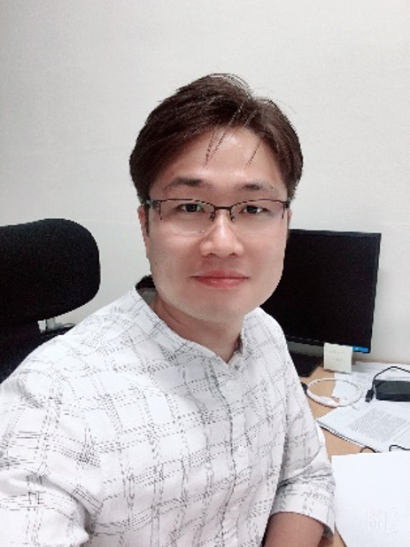

Supervisor

윤성환 (Sung Hwan Yoon)
Professor, Dept. of Mechanical Engineering, KMOU
Email: shy@kmou.ac.kr
Research: Combustion, Fire Safety, Ionic Wind, EPS Fire Suppression
연구실 위치 : 해사대학관 C1-260
전화 : 051-410-4261
FAX : 051-404-3985
E-mail : shy@kmou.ac.kr
실험실 : C-1340호 특수선추진시스템 및 운용실험실습실 II
주요학력
- 2009 부경대학교 기계공학과 공학사
- 2011 부경대학교 에너지시스템공학과 공학석사
- 2012 일본 북해도대학교 기계우주공학부 연소공학과 공학박사
주요경력
- 2016 일본 북해도대학교 연구원
- 2016 – 2018 사우디아라비아 KAUST 박사후연구원
주요연구분야
- Combustion instability / Acoustic instability
- Electrically assisted combustion / Plasma assisted combustion
- Emission (Soot, NOx, SOx)
- Laser diagnostics (Mie scattering, PIV, PLIF, etc.)
- Fire, Coal combustion, Syngas combustion, Fundamental combustion